건축설비기사 (2017-09-23 기출문제)
1과목: 건축일반
1. 철근콘크리트보에 늑근을 사용하는 가장 주된 이유는?
- 전단력에 의한 균열 방지를 위하여
- 콘크리트의 온도변화에 따른 균열을 방지하기 위하여
- 인장력에 의한 균열 방지를 위하여
- 콘크리트가 수평방향으로 터져나가는 것을 구속하기 위하여
(정답률: 70%)

2. 도서관의 서고계획에 관한 설명으로 옳지 않은 것은?
- 서고 내부는 자연채광을 하는 것이 좋다.
- 서고의 위치는 건물 후면의 독립된 위치가 좋다.
- 서고 면적 1m2 당 150~250권 정도, 평균 200권 정도이다.
- 서고는 장래의 확장을 고려한 평면 및 구조계획이 필요하다.
(정답률: 88%)
3. 열교(thermal bridge)현상에 관한 설명으로 옳지 않은 것은?
- 벽이나 바닥, 지붕 등의 건축물 부위에 단열이 연속되지 않는 부분이 있을 때 생긴다.
- 열교현상을 줄이기 위해서는 콘크리트 라멘조의 경우 가능한 한 내단열로 시공한다.
- 열교현상이 발생하는 부위는 표면온도가 낮아져서 결로가 쉽게 발생한다.
- 열교현상이 발생하면 전체 단열성이 저하된다.
(정답률: 86%)
4. 사무소 건축에서 코어시스템(core system)을 채용하는 이유와 가장 거리가 먼 것은?
- 유효면적률 증가
- 설비계통의 집약화
- 구조적인 이점
- 개인의 독립성 보장
(정답률: 89%)
5. 다음 중 연면적 당 숙박 면적비가 가장 큰 호텔은?
- 리조트 호텔
- 커머셜 호텔
- 레지덴셜 호텔
- 클럽하우스
(정답률: 79%)
6. 사무소 건축의 오피스 랜드스케이핑의 특성이 아닌것은?
- 사무의 흐름이나 작업의 성격을 중시한 배치방식이다.
- 독립성과 프라이버시가 양호하다.
- 면적 활용이 용이하고 공사비 절약이 가능하다.
- 오피스 랜드스케이핑은 개방식 배치의 일종이다.
(정답률: 92%)
7. 일조조건에 의한 남북간격의 한계결정에 있어서 직접 고려할 필요가 없는 것은?
- 동지의 태양고도
- 위도
- 대지의 경사
- 대지의 면적과 대지의 형태
(정답률: 71%)
8. 블록의 빈 속에 철근을 배근하고 콘크리트를 사춤하여 보강한 가장 이상적인 블록구조는?
- 조적식 블록조
- 거푸집 블록조
- 보강콘크리트 블록조
- 블록 장막벽
(정답률: 84%)
9. 학교의 배치계획에서 일종의 핑거 플랜으로 일조, 통풍 등 교실의 환경조건이 균등할 뿐 아니라, 구조 계획이 간단한 반면 상당히 넓은 대지를 필요로 하는 형은?
- 분산병렬형
- 폐쇄형
- 집합형
- 종합계획형
(정답률: 92%)
10. 조립식 구조(P.C)의 접합부(Joint)가 우선적으로 갖추어야 할 요구 성능으로 가장 거리가 먼 것은?
- 내화성
- 기밀성
- 방수성
- 구조 일체성
(정답률: 69%)
11. 철근콘크리트 보를 타설하는 과정에서 부득이하게 이어붓기를 할 때 그 위치로 옳은 것은?
- 보의 단부
- 스팬의 1/8 지점
- 스팬의 1/5 지점
- 스팬의 1/2 지점
(정답률: 76%)
12. 시티 호텔(city hotel)에 속하지 않는 것은?
- 커머셜 호텔
- 레지덴셜 호텔
- 산장 호텔
- 터미널 호텔
(정답률: 90%)
13. 학교교실의 음 환경에 관한 설명으로 옳지 않은 것은?
- 교실과 복도의 접촉면이 큰 평면이 소음을 막는데 유리하다.
- 소리를 잘 듣기 위해서는 적당한 잔향시간이 필요하다.
- 운동장에서의 소음은 배치계획으로 이를 방지할 수 있다.
- 음악교실은 반사재와 흡음재를 적절히 사용한다.
(정답률: 89%)
14. 중앙에 케이스, 대 등에 의한 직선 또는 곡선에 의한 고리모양부분을 설치하고 이 안에 레지스터, 포장대 등을 놓는 상점의 평면배치 형식은?
- 굴절배열형
- 직렬배열형
- 환상배열형
- 복합형
(정답률: 73%)
15. 단독주택의 정원계획에 관한 설명으로 옳지 않은 것은?
- 전통건축에서 중정은 중심적 생활공간이다.
- 전통건축에서 마당은 각 실들을 연결하는 매개공간이다.
- 지붕을 설치한 반외부 공간을 만들어 내∙외부 공간이 자연스럽게 연결되도록 구성한다.
- 정원은 주택을 배치하고 남은 실외공간으로 종합적인 계획에 있어 후순위로 고려한다.
(정답률: 82%)
16. 주택의 현관에 관한 설명으로 옳지 않은 것은?
- 전통주택에 없던 공간이, 현대화되면서 새롭게 도입된 것이다.
- 건물의 모서리에 위치하는 것이 동선처리에 유리하다.
- 대지의 형태 및 방위는 물론, 도로 위치에 따라 특성이 결정된다.
- 주택의 규모, 가족 수, 방문객 수 등을 고려하여 크기가 결정된다.
(정답률: 85%)
17. 상점을 계획할 때 고려할 사항으로 옳지 않은 것은?
- 심리적인 저항을 배제하는 방향으로 매장을 계획한다.
- 외관이 고객에게 좋은 인상을 주도록 한다.
- 종업원의 동선은 가능한 길게 하고, 고객의 동선은 가능한 짧게 한다.
- 상점내의 동선을 원활하게 한다.
(정답률: 93%)
18. 석재 사용상의 주의사항으로 옳지 않은 것은?
- 인장강도가 강하므로 인장력을 받는 장소에 사용한다.
- 크기의 제한, 운반상의 제한 등을 고려하여 석재의 최대치수를 정한다.
- 내화가 필요한 곳에서는 열에 강한 재질의 것을 사용한다.
- 석재를 다듬어 쓸 경우는 그 재질이 균일한 것을 써야 한다.
(정답률: 85%)
19. 주택 거실계획에 관한 설명으로 옳지 않은 것은?
- 거실은 동서방향으로 약간 긴 것이 좋다.
- 거실의 연장을 위하여 가급적 정원 사이에 테라스를 둔다.
- 거실은 남향이 적당하며, 햇빛과 통풍이 잘 되는 곳에 위치시킨다.
- 거실은 통로의 기능을 중심으로 계획한다.
(정답률: 76%)
20. 그림과 같은 환기 방식이 적합하지 않은 것은?
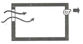
- 화장실
- 수술실
- 주방
- 욕실
(정답률: 90%)
2과목: 위생설비
21. 다음 중 배수트랩이 구비해야 할 조건과 가장 관계가 먼 것은?
- 가능한 한 구조가 간단할 것
- 배수 시에 자기세정이 가능할 것
- 가동부분이 있으며 가동부분에 봉수를 형성할 것
- 유효 봉수 깊이(50[mm] 이상 100[mm] 이하)를 가질 것
(정답률: 70%)
22. 통기와 배수의 역할을 동시에 하는 통기관은?
- 루프통기관
- 결합통기관
- 공용통기관
- 습윤통기관
(정답률: 64%)
23. 2개 이상의 엘보(elbows)를 사용하여 배관의 신축을 흡수하는 신축이음쇠는?
- 루프형
- 스위블형
- 슬리브형
- 벨로즈형
(정답률: 80%)
24. 경도가 높은 물이 보일러 용수로 적절하지 못한 이유는?
- 스케일이 많이 발생한다.
- 물의 팽창량이 많아진다.
- 유체의 흐름 저항이 낮아진다.
- 비등점이 낮아 물의 증발량이 많아진다.
(정답률: 76%)
25. 양수펌프로 사용되는 원심펌프에서 유효흡입 수두가 이론치에 미치지 못하는 가장 큰 이유는?
- 대기압
- 관로손실
- 펌프의 동력
- 토출양정의 변화
(정답률: 73%)
26. 90℃의 물 500kg과 30℃의 물 1000kg을 단열 혼합하였을 때 혼합된 물의 온도는?
- 20℃
- 30℃
- 40℃
- 50℃
(정답률: 79%)
27. 급탕설비에 관한 설명으로 옳지 않은 것은?
- 급탕배관에는 팽창관이 필요하다.
- 급탕순환방식에는 중력식과 강제식이 있다.
- 급탕규모가 큰 곳에는 환탕관에 순환펌프를 설치한다.
- 급탕배관에는 보온재를 사용해야 하나 환탕배관은 보온하지 않는다.
(정답률: 80%)
28. 급수배관 설계 및 시공상의 주의점에 관한 설명으로 옳지 않은 것은?
- 급수주관으로부터 분기하는 경우 T이음쇠를 사용한다.
- 수격작용(water hammering) 방지를 위해서 기구류 가까이에 통기관을 설치한다.
- 음료용 급수관과 다른 용도의 배관을 크로스커넥션(cross connection)하지 않도록 한다.
- 수평배관에는 공기가 정체하지 않도록 하며, 어쩔 수 없이 공기정체가 일어나는 곳에는 공기빼기밸브를 설치한다.
(정답률: 74%)
29. 급수방식 중 수도직결방식에 관한 설명으로 옳지 않은 것은?
- 고층으로의 급수가 어렵다.
- 일반적으로 하향급수 배관방식을 사용한다.
- 저수조가 없으므로 단수 시에 급수가 불가능하다.
- 위생성 및 유지∙관리 측면에서 가장 바람직한 방식이다.
(정답률: 75%)
30. 고가수조방식의 급수법에서 최고층에 세정밸브식 대변기가 설치되어 있다. 세정밸브에서 고가수조의 최저수면까지의 높이는 최소 얼마 이상으로 하여야 하는가? (단, 고가수조에서 세정밸브까지의 전마찰 손실 수두는 10kPa 이다.)
- 약 8m
- 약 12m
- 약 14m
- 약 16m
(정답률: 55%)
31. 정화조에서 호기성 미생물의 활동이 가장 활발한 것은?
- 부패조
- 산화조
- 소독조
- 여과조
(정답률: 72%)
32. 양수량이 1m3/min, 양정이 10m인 펌프의 회전수를 10% 증가시켰을 경우 양정은 얼마가 되겠는가?
- 약 9m
- 약 10m
- 약 12m
- 약 14m
(정답률: 66%)
33. 직관내의 마찰손실수두와 관련된 다르시-와이스 바하의 식에서 유체의 흐름이 층류일 경우 마찰 계수 λ는? (단, Re는 레이놀즈수)
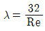
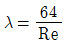
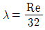
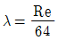
(정답률: 70%)
34. 급탕설비의 온수순환에 관한 설명으로 옳은 것은?
- 순환펌프에 의한 강제순환은 물의 밀도차에 따른 순환이다.
- 강제순환수두는 배관의 길이와 마찰손실수두에 반비례한다.
- 배관의 마찰손실수두가 자연순환수두보다 커지면 자연순환이 안된다.
- 중력순환수두는 순환높이에 비례하고, 공급관과 반탕관에서의 물의 밀도 차이에 반비례한다.
(정답률: 70%)
35. 고층건물의 배수입관(수직관)에 인접되어 접속되는 위생기구는 다음 중 어떤 원인에 의하여 봉수가 파괴될 가능성이 가장 높은가?
- 증발작용
- 모세관 현상
- 자기사이펀 현상
- 감압에 의한 흡인작용
(정답률: 58%)
36. 위생설비 유닛화의 목적과 가장 거리가 먼 것은?
- 인건비를 절약하기 위하여
- 시공의 질적 향상을 위하여
- 현장에서의 작업량 확대를 위하여
- 공기단축과 공정의 단순화를 위하여
(정답률: 81%)
37. 수격작용에 관한 설명으로 옳지 않은 것은?
- 수격작용의 크기는 유속에 반비례한다.
- 양정이 높은 펌프를 사용할 때 발생하기 쉽다.
- 수격작용은 에어챔버를 설치함으로써 완화시킬 수 있다.
- 밸브를 급히 열어 정지 중인 배관 내의 물을 급격히 유동시킨 경우에도 발생한다.
(정답률: 81%)
38. 펌프의 서징(Surging) 현상에 관한 설명으로 옳지 않은 것은?
- 토출배관 중에 수조 또는 공기체류가 있는 경우에 발생할 수 있다.
- 서징이 발생되면 유량 및 압력이 주기적으로 변동되면서 진동과 소음을 수반한다.
- 토출량을 조절하는 밸브 위치가 수조 또는 공기가 체류하는 곳보다 하류에 있는 경우에 발생할 수 있다.
- 펌프의 양정 특성곡선이 산형 특성이고, 그 사용범위가 오른쪽으로 감소하는 특성을 갖는 범위에서 사용하는 경우에 주로 발생한다. 한
(정답률: 54%)
39. 다음의 위생기구를 배수부하 단위가 큰 것부터 작은 순으로 올바르게 나열한 것은?
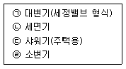
- ㉠＞㉣＞㉢＞㉡
- ㉠＞㉡＞㉣＞㉢
- ㉢＞㉠＞㉣＞㉡
- ㉢＞㉣＞㉠＞㉡
(정답률: 73%)
40. 관 속을 흐르는 유체에 관한 설명으로 옳은 것은?
- 유속에 비례하여 유량은 증가한다.
- 유체의 점도가 클수록 유량은 증가한다.
- 관의 마찰계수가 크면 유량은 증가한다.
- 관경의 제곱에 반비례해서 유량은 증가한다.
(정답률: 74%)
3과목: 공기조화설비
41. 원형 덕트와 장방형 덕트의 환산식으로 옳은 것은? (단, d: 원형 덕트의 직경 또는 환산직경, a : 장방형 덕트의 장변길이, b : 장방형 덕트의 단변길이)
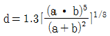
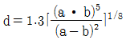
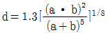
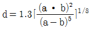
(정답률: 69%)
42. 공기조화방식 중 전공기 방식에 관한 설명으로 옳지 않은 것은?
- 실내에 배관으로 인한 누수의 우려가 없다.
- 대형덕트 공간이 필요 없어 설치가 용이하다.
- 병원의 수술실, 공장의 클린룸과 같이 청정을 필요로 하는 곳에 적용이 가능하다.
- 실내에 취출구나 흡입구를 설치하면 되므로 팬코일 유닛과 같은 기구의 노출이 없어서 실내 유효면적을 넓힐 수 있다.
(정답률: 68%)
43. 다음과 같은 조건에서 실 체적이 500m3인 어떤 실의 틈새바람에 의한 현열부하와 잠열부하는 약 얼마인가?
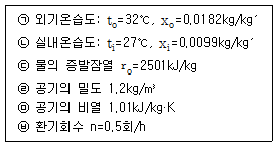
- 현열부하 300W, 잠열부하 1240W
- 현열부하 420W, 잠열부하 1730W
- 현열부하 600W, 잠열부하 2480W
- 현열부하 720W, 잠열부하 2980W
(정답률: 58%)
44. 다음 중 외주부(perimeter zone)의 부하변동에 가장 효과적으로 대응할 수 있는 공기조화 방식은?
- 단일덕트방식
- 각층 유닛방식
- 팬코일 유닛방식
- 멀티죤 유닛방식
(정답률: 72%)
45. 길이 ℓ[m]인 냉각수관이 수평으로 설치되어 있다. 이 관의 직관부 마찰저항 △Pf[Pa]를 구하는 공식으로 옳은 것은? (단, 관 마찰저항계수는 λ, 관경은 d[m], 유속은 v[m/sec], 유체의 밀도는 ρ[kg/m3]이다.)
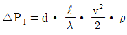
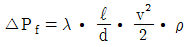
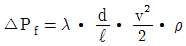
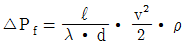
(정답률: 75%)
46. 수관보일러에 관한 설명으로 옳은 것은?
- 지역난방에는 사용할 수 없다.
- 부하변동에 대한 추종성이 높다.
- 사용압력이 연관식보다 낮으며 예열시간이 길다.
- 연관식보다 설치면적이 작고, 초기 투자비가 적게 든다.
(정답률: 42%)
47. 냉동기의 증발기에서 일어나는 상태변화에 관한 설명으로 옳지 않은 것은?
- 압력이 높아진다.
- 비엔탈피가 증가한다.
- 비엔트로피가 증가한다.
- 액체냉매가 기체냉매로 상이 변한다.
(정답률: 49%)
48. 증기난방용 방열기의 표준 방열량은?
- 450W/m2
- 523W/m2
- 650W/m2
- 756W/m2
(정답률: 71%)
49. 난방장치의 용량계산을 위한 설계용 외기온도를 설정할 때 “TAC온도 위험률 2.5% 온도”의 의미로 가장 알맞은 것은? (단, 난방기간은 연간 121일이다.)
- 난방기간동안의 외기온도가 설계 외기온도보다 2.5% 높을 가능성이 있다.
- 난방기간동안의 외기온도가 설계 외기온도보다 2.5% 낮을 가능성이 있다.
- 2.5%의 시간에 해당하는 약 72시간의 외기온도가 설계 외기온도보다 높을 가능성이 있다.
- 2.5%의 시간에 해당하는 약 72시간의 외기온도가 설계 외기온도보다 낮을 가능성이 있다.
(정답률: 56%)
50. 축류형 송풍기의 종류에 속하지 않는 것은?
- 베인형
- 후곡형
- 튜브형
- 프로펠러형
(정답률: 57%)
51. 습공기에 관한 설명으로 옳지 않은 것은?
- 절대습도가 일정할 경우 건구온도가 높을수록 비체적은 커진다.
- 절대습도가 일정할 경우 건구온도가 높을수록 엔탈피는 커진다.
- 건구온도가 일정할 경우 상대습도가 높을수록 상대습도는 높아진다.
- 건구온도가 일정할 경우 상대습도가 높을수록 절대습도는 낮아진다.
(정답률: 64%)
52. 다음과 같은 조건에 있는 두께 250mm인 외벽(콘크리트 200mm + 석고 플라스터 50mm)을 통해 들어오는 열량은?
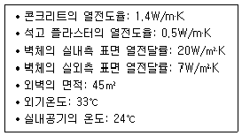
- 약 914W
- 약 929W
- 약 945W
- 약 977W
(정답률: 55%)
53. 30℃의 외기 40%와 23℃의 환기 60%를 혼합하여 냉각코일로 냉각감습하는 경우 바이패스팩터가 0.2이면 코일의 출구 온도는? (단, 코일 표면온도는 10℃ 이다.)
- 12.16℃
- 13.16℃
- 14.16℃
- 15.16℃
(정답률: 52%)
54. 공조배관계에 부압방지를 위한 배관법으로 옳지 않은 것은?
- 순환펌프 토출측에 팽창탱크가 접속되는 것을 피한다.
- 순환펌프는 배관 도중 온도가 가장 높은 곳에 설치한다.
- 팽창탱크는 장치의 가장 높은 곳보다 더 높은 위치로 한다.
- 순환펌프는 배관 도중 가능한 한 압입양정이 높은 곳에 설치한다.
(정답률: 54%)
55. 바닥면에서 1m의 위치에 중성대가 있는 실에서 바닥면상 2m 지점에서의 실내외 압력차는? (단, 실내공기의 밀도는 1.2kg/m3이며, 실외공기의 밀도는 1.25kg/m3이다.)
- 실내가 0.1mmAq 높다.
- 실외가 0.1mmAq 높다.
- 실내가 0.⑤mmAq 높다.
- 실외가 0.⑤mmAq 높다.
(정답률: 56%)
56. 온수배관에 관한 설명으로 옳지 않은 것은?
- 배관의 신축을 고려한다.
- 배관재료는 내식성을 고려한다.
- 온수배관에는 공기가 고이지 않도록 구배를 준다.
- 온수보일러의 팽창관에는 게이트 밸브를 설치한다.
(정답률: 83%)
57. 급수로부터 각 유닛을 거쳐 나오는 총길이가 동일하므로 기기마다의 저항이 균일하게 되고, 따라서 유량을 균일하게 할 수 있는 배관 회로 방식은?
- 역환수방식
- 자연환수방식
- 간접환수방식
- 건식환수방식
(정답률: 82%)
58. 온수난방과 비교한 증기난방의 특징으로 옳은 것은?
- 예열시간이 짧다
- 한랭지에서 동결의 우려가 크다
- 부하변동에 따른 실내방열량의 제어가 용이하다.
- 소요방열면적과 배관경이 크므로 설비비가 높다.
(정답률: 64%)
59. 덕트 내의 풍속이 10m/s, 정압이 245Pa 일 경우 전압은? (단, 공기의 밀도는 1.2kg/m3 이다.)
- 254Pa
- 272Pa
- 3⑤Pa
- 343Pa
(정답률: 60%)
60. 정확한 급기량과 배기량 변화에 의해 실내압을 정 압(+) 또는 부압(-)으로 유지할 수 있는 환기 방식은?
- 급기팬과 배기팬의 조합
- 급기팬과 자연배기의 조합
- 자연급기와 배기팬의 조합
- 자연급기와 자연배기의 조합
(정답률: 75%)
4과목: 소방 및 전기설비
61. 가스사용시설에서 지상배관의 표면색상은? (단, 황색띠를 2중으로 표시한 경우 제외)
- 적색
- 백색
- 황색
- 녹색
(정답률: 78%)
62. 그림과 같은 회로에서 7[Ω]의 저항에 걸리는 전압은?
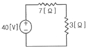
- 4[V]
- 7[V]
- 14[V]
- 28[V]
(정답률: 68%)
63. 멀티미터(테스터)로 측정할 수 없는 것은?
- 저항
- 전력량
- 교류전압
- 직류전류
(정답률: 72%)
64. 3상 교류에 관한 설명으로 옳지 않은 것은?
- 회전자장을 만든다.
- 단상전력의 2배가 된다.
- 대용량의 전력공급에 사용된다.
- 각 상간의 위상차는 2π/3[rad]이다.
(정답률: 61%)
65. 20[kVA]의 단상 변압기 2대로 공급할 수 있는 최대 3상전력[kVA]은?
- 약 20
- 약 25
- 약 30
- 약 35
(정답률: 51%)
66. 옥내소화전설비의 송수구에 관한 설명으로 옳지 않은 것은?
- 구경 65mm의 쌍구형 도는 단구형으로 할 것
- 송수구에는 이물질을 막기 위한 마개를 씌울 것
- 송수구로부터 주 배관에 이르는 연결배관에는 개폐밸브를 설치할 것
- 송수구의 가까운 부분에 자동배수밸브(또는 직경 5mm의 배수공) 및 체크밸브를 설치할 것
(정답률: 50%)
67. 건축화조명에 관한 설명으로 옳지 않은 것은?
- 조명기구 배치방식에 의하면 거의 전반조명 방식에 해당된다.
- 조명기구 배광방식에 의하면 거의 직접조명 방식에 해당된다.
- 건축물의 천장이나 벽을 조명기구 겸용으로 마무리하는 것이다.
- 천장면 이용방식으로는 다운라이트, 코퍼라이트, 광천장조명 등이 있다.
(정답률: 70%)
68. 다음과 같은 회로에서 a, b간의 합성 정전용량은?
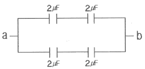
- 1[㎌]
- 2[㎌]
- 4[㎌]
- 8[㎌]
(정답률: 66%)
69. 다음은 옥내소화전설비의 전동기에 따른 펌프를 이용하는 가압송수장치에 관한 설명이다. ( )안에 알맞은 것은?
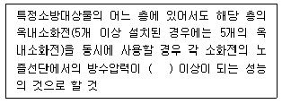
- 0.1MPa
- 0.17MPa
- 0.25MPa
- 0.7MPa
(정답률: 71%)
70. 다음 중 피드백 제어 시스템에서 반드시 필요한 장치는?
- 감도를 향상시키는 장치
- 안정도를 향상시키는 장치
- 입력과 출력을 비교하는 장치
- 응답속도를 빠르게 하는 장치
(정답률: 80%)
71. 자동화재탐지설비의 감지기 중 감지기 주위의 공기가 일정한 농도의 연기를 포함하게 되었을 때 작동하는 감지기는?
- 차동식 감지기
- 정온식 감지기
- 보상식 감지기
- 이온화식 감지기
(정답률: 75%)
72. 비상콘센트설비에 비상전원으로 자가발전설비를 설치하는 경우, 자가발전설비는 비상콘센트설비를 최소 얼마 이상 유효하게 작동시킬 수 있는 용량으로하여야 하는가?
- 10분
- 20분
- 30분
- 60분
(정답률: 77%)
73. 옥외소화전설비에 관한 설명으로 옳지 않은 것은?
- 호스접결구는 지면으로부터 높이가 0.5m 이상 1m 이하의 위치에 설치하여야 한다.
- 옥외소화전설비에는 옥외소화전마다 그로부터 5m 이내의 장소에 소화전함을 설치하여야 한다.
- 옥외소화전설비의 수원은 그 저수량이 옥외소화전의 설치개수에 5m3를 곱한 양 이상이 되도록 하여야한다.
- 호스접결구는 특정소방대상물의 각 부분으로부터 하나의 호스접결구까지의 수평거리가 40m 이하가 되도록 설치하여야 한다.
(정답률: 74%)
74. 4극의 공조기팬용 유도전동기를 220[V] 60[Hz]의 전원으로 운전하는 경우 회전수는 얼마인가? (단, 전동기의 슬립(slip)은 5[%]이다.)
- 900[rpm]
- 1710[rpm]
- 1750[rpm]
- 1800[rpm]
(정답률: 64%)
75. 유압식 엘리베이터에 관한 설명으로 옳지 않은 것은?
- 오버헤드(overhead)가 작다.
- 기계실을 승강로와 떨어져 설치할 수 있다.
- 전동기의 출력과 소비전력이 다소 크다는 단점이 있다.
- 10층 이상의 고층건축물에 고속 엘리베이터로 주로 사용된다. 한
(정답률: 64%)
76. 선간전압 220[V], 전류 70[A], 소비전력 18[kW]인 3상 유도전동기의 역률은?
- 0.67
- 0.72
- 0.75
- 1.17
(정답률: 43%)
77. 특별 제3종 접지공사의 접지저항값은 최대 얼마 이하로 하여야 하는가?
- 10[Ω]
- 20[Ω]
- 30[Ω]
- 40[Ω]
(정답률: 67%)
78. 공조설비에서 DDC방식 중 변풍량(VAV) 제어 방식의 특징으로 옳지 않은 것은?
- 부하변동이 심한 건축물에서는 사용이 곤란하다.
- 부하변동에 따른 송풍용 동력을 절약할 수 있다.
- 순간적 대응이 빠르므로 주거 쾌적성이 향상된다.
- 동시부하율을 고려하여 설비비를 경감시킬 수 있다.
(정답률: 70%)
79. 스프링클러설비의 배관 중 스프링클러헤드가 설치되어 있는 배관을 의미하는 것은?
- 주배관
- 교차배관
- 가지배관
- 급수배관
(정답률: 85%)
80. 무한 직선도체의 전류에 의한 자계가 직선도체로부터 1[m] 떨어진 점에서 1[AT/m]로 될 때 도체의 전류의 크기는 몇[A]인가?
- π/2
- π
- 3π/2
- 2π
(정답률: 44%)
5과목: 건축설비관계법규
81. 건축법령상 다중이용 건축물에 속하지 않는 것은?(단, 층수가 16층 미만인 경우)
- 종교시설의 용도로 쓰는 바닥면적의 합계가 5,000m2인 건축물
- 판매시설의 용도로 쓰는 바닥면적의 합계가 5,000m2인 건축물
- 업무시설의 용도로 쓰는 바닥면적의 합계가 5,000m2인 건축물
- 의료시설 중 종합병원의 용도로 쓰는 바닥면적의 합계가 5,000m2인 건축물
(정답률: 71%)
82. 방송 공동수신설비를 설치하여야 하는 대상 건축물에 속하지 않는 것은?
- 다세대주택
- 다가구주택
- 바닥면적의 합계가 5,000m2으로서 업무시설의 용도로 쓰는 건축물
- 바닥면적의 합계가 5,000m2으로서 숙박시설의 용도로 쓰는 건축물
(정답률: 67%)
83. 다음의 소방시설 중 경보설비에 속하지 않는 것은?
- 비상방송설비
- 자동화재탐지설비
- 자동화재속보설비
- 무선통신보조설비
(정답률: 80%)
84. 문화 및 집회시설 중 공연장의 개별관람석의 바닥면적이 1,000m2인 경우, 개별관람석 출구의 유효 너비 합계는 최소 얼마 이상으로 하여야 하는가?(관련 규정 개정전 문제로 여기서는 기존 정답인 4번을 누르면 정답 처리됩니다. 자세한 내용은 해설을 참고하세요.)
- 3m
- 4m
- 5m
- 6m
(정답률: 67%)
85. 녹색건축 인증 등급의 구분에 속하지 않는 것은?
- 우수(그린 2등급)
- 우량(그린 3등급)
- 일반(그린 4등급)
- 보통(그린 5등급)
(정답률: 71%)
86. 특정소방대상물이 문화 및 집회시설 중 공연장인 경우, 모든 층에 스프링클러설비를 설치하여야 하는 수용인원 기준은?
- 100명 이상
- 200명 이상
- 500명 이상
- 1,000명 이상
(정답률: 59%)
87. 공동주택의 거실에 설치하는 반자의 높이는 최소얼마 이상이어야 하는가?
- 1.8m
- 2.1m
- 2.7m
- 4m
(정답률: 82%)
88. 방염성능기준 이상의 실내장식물 등을 설치하여야 하는 특정소방대상물에 속하는 것은? (단, 층수가 10층인 경우)
- 아파트
- 기숙사
- 숙박시설
- 실내수영장
(정답률: 59%)
89. 건축법령상 다음과 같이 정의되는 주택의 종류는?
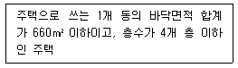
- 다중주택
- 연립주택
- 다세대주택
- 다가구주택
(정답률: 64%)
90. 건축물에는 급수∙ 배수∙환기∙난방설비를 설치하는 경우, 건축기계설비기술사 또는 공조냉동기계기술사의 협력을 받아야 하는 대상 건축물에 속하지 않는 것은? (단, 연면적 10,000m2 미만인 건축물의 경우)
- 연립주택
- 판매시설로서 해당 용도에 사용되는 바닥면적의 합계가 2,000m2인 건축물
- 의료시설로서 해당 용도에 사용되는 바닥면적의 합계가 2,000m2인 건축물
- 숙박시설로서 해당 용도에 사용되는 바닥면적의 합계가 2,000m2인 건축물
(정답률: 60%)
91. 다음 중 내화구조에 해당하지 않는 것은?
- 철골철근콘크리트조의 계단
- 두께 8cm인 철근콘크리트조의 바닥
- 철재로 보강된 유리블록으로 된 지붕
- 작은 지름이 25cm인 철근콘크리트조의 기둥
(정답률: 66%)
92. 연면적 200m2을 초과하는 건축물에 설치하는 계단에 관한 기준 내용으로 옳지 않은 것은?
- 돌음계단의 단너비는 그 좁은 너비의 끝부분으로부터 30cm의 위치에서 측정한다.
- 너비가 2m를 넘는 계단에는 계단의 중간에 너비 2m이내마다 난간을 설치하여야 한다.
- 높이가 3m를 넘는 계단에는 높이 3m 이내마다 유효 너비 1.2m 이상의 계단참을 설치하여야 한다.
- 높이 1m를 넘는 계단 및 계단참의 양옆에는 난간(벽 또는 이에 대치되는 것 포함)을 설치하여야 한다.
(정답률: 55%)
93. 6층 이상의 거실면적의 합계가 3,000m2인 경우, 설치하여야 하는 승용 승강기의 최소 대수가 가장 많은 것은? (단, 8인승 승강기의 경우)
- 업무시설
- 숙박시설
- 위락시설
- 판매시설
(정답률: 61%)
94. 건축물의 출입구에 설치하는 회전문에 관한 기준 내용으로 옳지 않은 것은?
- 계단이나 에스컬레이터로부터 1m 이상의 거리를 둘 것
- 회전문의 회전속도는 분당회전수가 8회를 넘지 아니하도록 할 것
- 출입에 지장이 없도록 일정한 방향으로 회전하는 구조로 할 것
- 회전문의 중심축에서 회전문과 문틀 사이의 간격을 포함한 회전문날개 끝부분까지의 길이는 140cm 이상이 되도록 할 것
(정답률: 78%)
95. 건축물의 옥상에 헬리포트를 설치하거나 헬리콥터를 통하여 인명 등을 구조할 수 있는 공간을 확보하여야 하는 대상 건축물 기준으로 옳은 것은? (단, 건축물의 지붕을 평지붕으로 하는 경우)
- 11층 이상인 층의 바닥면적의 합계가 3,000m2 이상인 건축물
- 11층 이상인 층의 바닥면적의 합계가 5,000m2 이상인 건축물
- 11층 이상인 층의 바닥면적의 합계가 10,000m2 이상인 건축물
- 11층 이상인 층의 바닥면적의 합계가 12,000m2 이상인 건축물
(정답률: 76%)
96. 화재안전기준에 따라 소화기구를 설치하여야 하는 특정소방대상물의 연면적 기준은?
- 10m2 이상
- 25m2 이상
- 33m2 이상
- 45m2 이상
(정답률: 68%)
97. 배연설비의 설치에 관한 기준 내용으로 옳지 않은 것은?
- 배연구는 수동으로 열고 닫을 수 없도록 할 것
- 배연창의 유효면적은 최소 1m2 이상으로 할 것
- 배연구는 예비전원에 의하여 열 수 있도록 할 것
- 건축법령에 의하여 건축물에 방화구획이 설치된 경우에는 그 구획마다 1개소 이상의 배연창을 설치할 것
(정답률: 75%)
98. 다음은 직통계단의 설치에 관한 기준 내용이다. ( )안에 알맞은 것은?
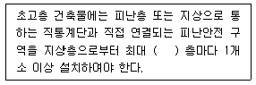
- 10개
- 20개
- 30개
- 40개
(정답률: 80%)
99. 특별시나 광역시에 건축하는 경우 특별시장이나 광역시장의 허가를 받아야 하는 대상 건축물의 층수 기준은?
- 층수가 6층 이상인 건축물
- 층수가 16층 이상인 건축물
- 층수가 21층 이상인 건축물
- 층수가 31층 이상인 건축물
(정답률: 80%)
100. 외기에 직접 면하고 1층 또는 지상으로 연결된 출입문을 방풍구조로 하지 않아도 되는 대상 출입문에 대한 기준 내용으로 옳지 않은 것은?
- 다세대주택의 출입문
- 너비 1.5m 이하의 출입문
- 바닥면적 300m2 이하의 개별 점포의 출입문
- 사람의 통행을 주목적으로 하지 않는 출입문
(정답률: 55%)